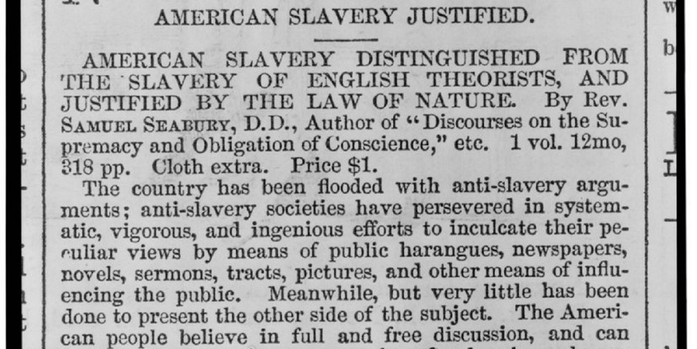

Nat Turner’s Rebellion was a four-day rebellion of enslaved Virginians which was led by Nat Turner. Nat Turner enlisted around 70 blacks, free and enslaved. These men would travel to several houses to free black slaves and kill white people, of all ages and genders. From this, about 60 white Americans died, before the rebellion was suppressed by the militia.
Nat Turner wanted to spread the idea that slave-holding is in reality extremely brutal. He hoped to change the attitudes of many white people.
Nat Turner led the rebellion. He was an enslaved black male preacher. He believed it was his God-given duty to “slay my own enemies with their own weapon.”
This rebellion further strengthened abolitionists’ ideas that slaves were not happy in their current states. It was argued in John C. Calhoun’s speech, “Slavery as a positive good” that slaves would not do anything productive with their life if they had been free. He further argues that slaves get hospitalization from their masters, showcasing the positives for slaves. However, Nat Turner’s Rebellion clearly showed that slaves were not happy with where they currently are. This set the stage for the Civil War by further increasing debates.
